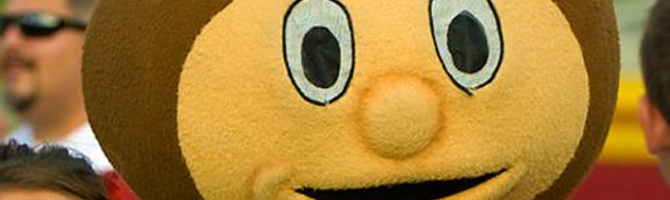

Miscellany
I do have interests outside of the academy. Not much outside interests, though. Below are my outside interests -- expressed in lists/links format -- apropos of nothing relating to my endeavors as a graduate student.
Sports
- The Ohio State University Buckeyes
In old Ohio, there is a team that's known throughout the land. Eleven warriors, brave and bold, whose fame will ever stand. - Cleveland Indians
Indian Fever, (Be a Believer!) in the Cleveland Indians!. - Cleveland Browns
- ESPN
Tech stuff
- Fedora Project
I'm a Linux user and enthusiast. Fedora is the current distro of choice. I've been Windows free as a personal user since 2004. - Free Software Foundation
- Slashdot
- KDE